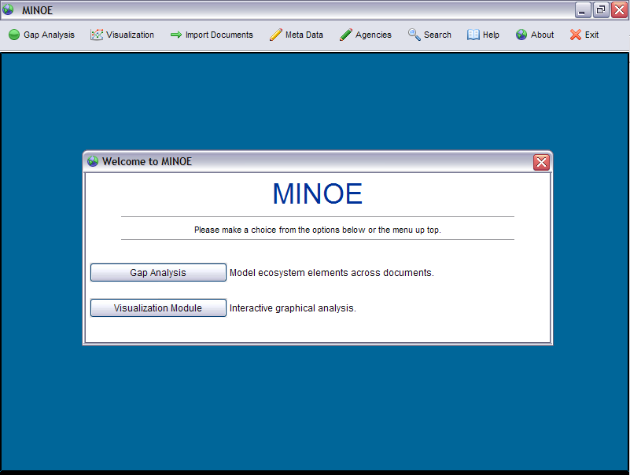

Workspace Layout
When the program finishes loading, the splash screen disappears and the workspace is displayed. The workspace manages all of the windows that MINOE will be using.

Let's go through what each menu option does:
- Gap Analysis - Opens the Gap Analysis module.
- Visualization - Opens the Visualization (graphing) module.
- Import Documents - Opens the Import Documents module and displays a folder asking for the location of your documents to import.
- Meta Data - Opens the Meta Data Editor.
- Agencies - Opens the Agencies Editor.
- Search - Opens the Search module for doing standard keyword searches.
- Help - Opens the Help module.
- About - Displays the About screen.
- Exit - Quits the program.